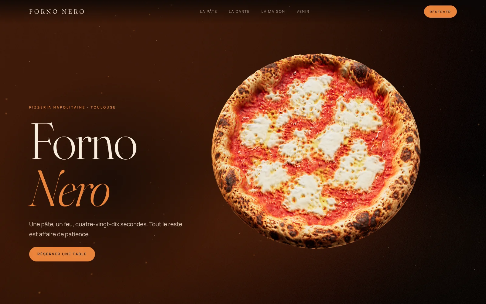
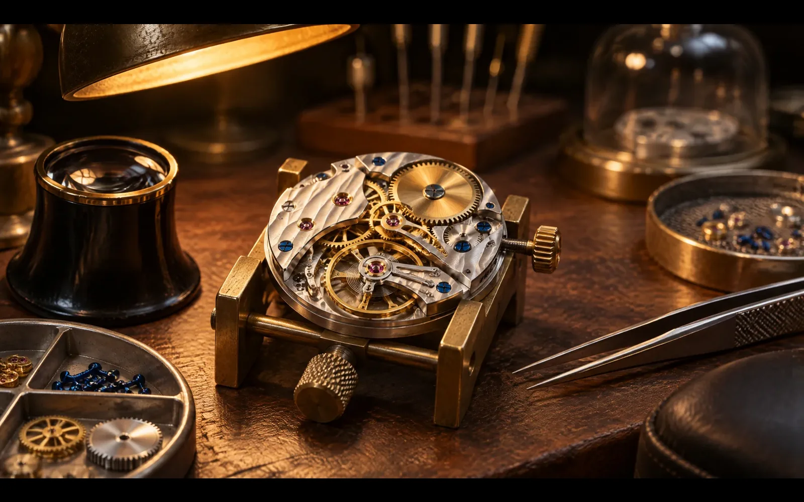
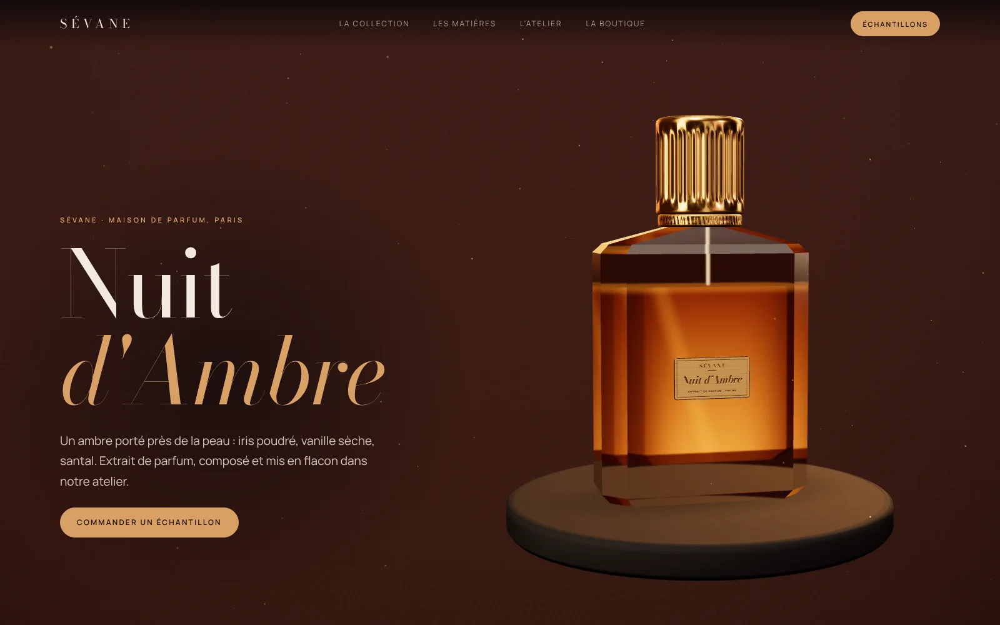
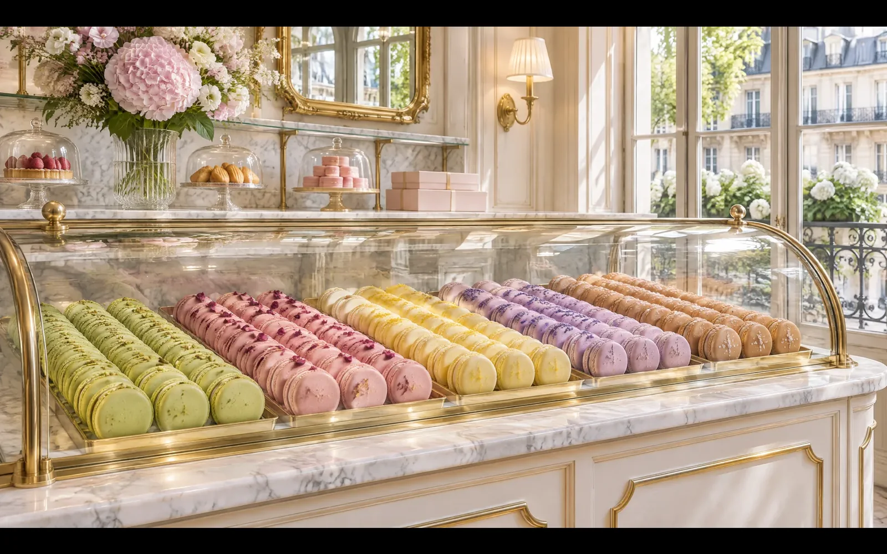
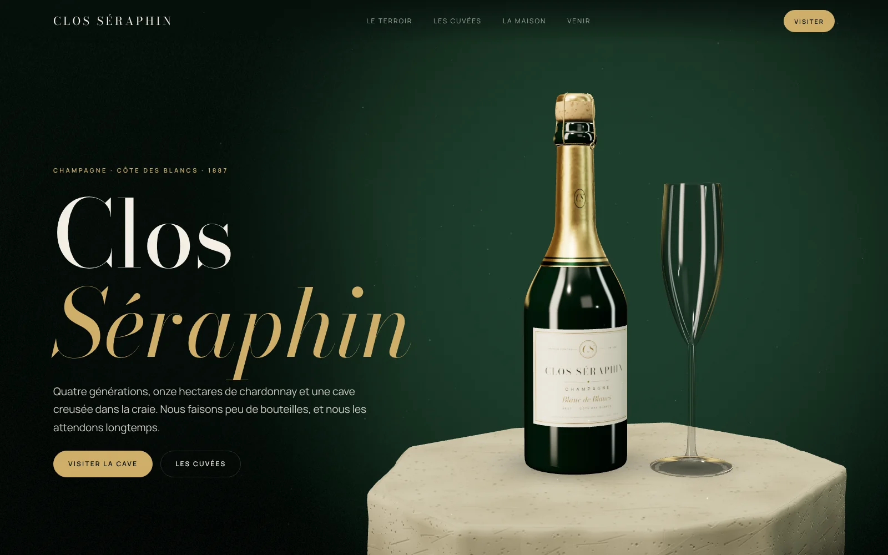
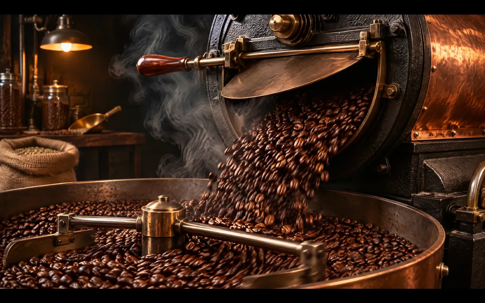

01
Un objet, pas une photo
Le produit est modélisé et affiché en temps réel dans le navigateur. On en fait le tour, on s'en approche, il réagit.
Galerie de démonstration
Des sites conçus comme des vitrines de joaillier : un objet en trois dimensions, une lumière juste, et une histoire qui se déroule au fil du doigt.
Six maisons, six métiers
Une pizza qui se découpe, une montre qui s'ouvre sur son mouvement, un bouchon qui saute. Ici, le produit n'est pas une photo : on tourne autour, on s'approche, on le voit vivre.
Les démos
Six maisons fictives, six sites complets. Chacun se parcourt de haut en bas, sur ordinateur, tablette ou téléphone.
Pizzeria napolitaine
Une margherita en relief qui s'incline, passe au feu, reçoit son basilic, puis laisse partir une part.
Entrer
Haute horlogerie
Une montre qui donne l'heure exacte, puis s'ouvre couche par couche jusqu'aux rouages de son mouvement.
Entrer
Parfumerie de niche
Un flacon de verre épais, un capot qui se lève, et les notes du parfum qui gravitent autour de lui.
Entrer
Pâtisserie
Des macarons en apesanteur, une coque qui se soulève sur son cœur, une pyramide qui se compose toute seule.
Entrer
Maison de champagne
Une bouteille dans la pénombre de la cave, le bouchon qui saute, la flûte qui se remplit de bulles.
Entrer
Torréfacteur
Une tasse d'espresso, des grains qui s'enroulent en tourbillon, puis une plongée dans la crema.
Entrer
La méthode
01
Le produit est modélisé et affiché en temps réel dans le navigateur. On en fait le tour, on s'en approche, il réagit.
02
Chaque chapitre déplace la caméra et transforme l'objet. Le visiteur avance à son rythme, la mise en scène le suit.
03
Polices, images et moteur 3D sont servis avec le site : aucun service tiers à attendre, aucun traceur.
04
La mise en page se recompose sur tablette et téléphone, et la définition s'ajuste seule si l'appareil peine.
Et la vôtre ?
Nom, couleurs, textes, photos, objet en 3D : tout se remplace. Ces six maisons n'existent pas ; la septième peut être la vôtre.